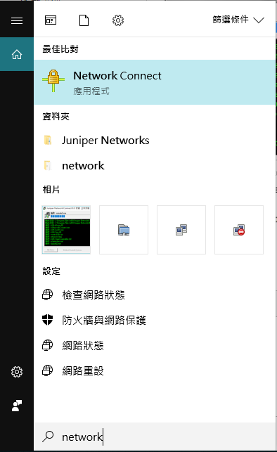
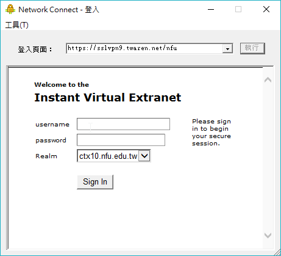
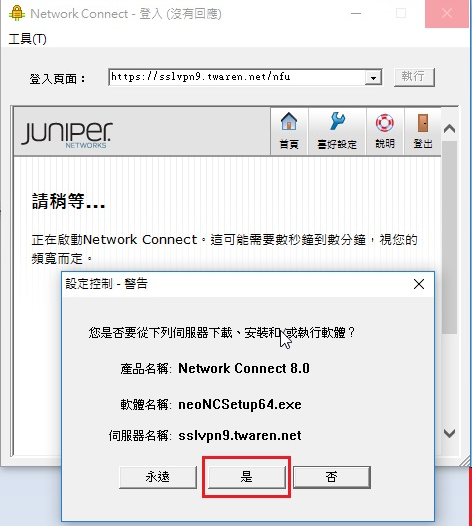
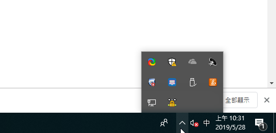

上傳youtube影片 << Previous Next >> virtualbox
上傳youtube影片 << Previous Next >> virtualbox
SSL-VPN服務教學
1. 首次使用須先安裝SSL VPN 程式(Juniper Networks Connect)
(1)請依您的作業系統版本下載使用者端程式：https://drive.narlabs.org.tw/navigate/s/8F663EC143514CF295FCB53B5B228956GUY
(2)程式下載完成後，點擊兩下開始安裝。

2.進行身份驗證(可由Juniper Network Connect或IE，請擇一進行身分認證)

執行程式後，於"登入頁面"輸入網址 : https://sslvpn9.twaren.net/nfu ，後按下"執行"

3.輸入使用者帳號密碼，請填入校務行政AD帳號及密碼。請完整填寫您在校務行政AD帳號以及密碼，否則國網中心找不到對象進行身份確認
4.出現"設定控制-警告"視窗，按下"是"
5.螢幕右下角顯示"已連接"，表示已成功連線。

上傳youtube影片 << Previous Next >> virtualbox